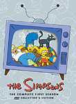
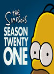

The Simpsons
List contains: 747 items, 12.5 hours.
Seasons: 1 | 2 | 3 | 4 | 5 | 6 | 7 | 8 | 9 | 10 | 11 | 12 | 13 | 14 | 15 | 16 | 17 | 18 | 19 | 20 | 21 | 22 | 23 | 24 | 25 | 26 | 27 | 28 | 29 | 30 | 31 | 32 | 33 | 34 |
Seasons: 1 | 2 | 3 | 4 | 5 | 6 | 7 | 8 | 9 | 10 | 11 | 12 | 13 | 14 | 15 | 16 | 17 | 18 | 19 | 20 | 21 | 22 | 23 | 24 | 25 | 26 | 27 | 28 | 29 | 30 | 31 | 32 | 33 | 34 |
Stephen Klancher
...has seen 8
...has seen 0.1 hours
...has not seen 12.3 hours

Timeline
Most Recent:
Exit Through the Kwik-E-Mart
...has seen 8
...has seen 0.1 hours
...has not seen 12.3 hours
Timeline
Most Recent:
Exit Through the Kwik-E-Mart


Two Cars in Every Garage and Three Eyes on Every Fish (1990) Airs on 1990-11-01
S2 - E4 of The Simpsons
S2 - E4 of The Simpsons

Raging Abe Simpson and His Grumbling Grandson in 'The Curse of the Flying Hellfish' (1996) Airs on 1996-04-28
S7 - E22 of The Simpsons
S7 - E22 of The Simpsons
El Viaje Misterioso de Nuestro Jomer (The Mysterious Voyage of Homer) (1997) Airs on 1997-01-05
S8 - E9 of The Simpsons
S8 - E9 of The Simpsons

Marge vs. Singles, Seniors, Childless Couples and Teens, and Gays (2004) Airs on 2004-01-04
S15 - E8 of The Simpsons
S15 - E8 of The Simpsons


Stephen Klancher: November 17, 2010 
"Nelson loved a little lamb... and it kept him nice and sane..."
"Failing banks, tent cities, they recreated the thirties... No those are real."
"Failing banks, tent cities, they recreated the thirties... No those are real."
A Totally Fun Thing That Bart Will Never Do Again (2012) Airs on 2012-04-29
S23 - E19 of The Simpsons
S23 - E19 of The Simpsons
You Won't Believe What This Episode Is About - Act Three Will Shock You! Airs on 2022-03-13
S33 - E14 of The Simpsons
S33 - E14 of The Simpsons